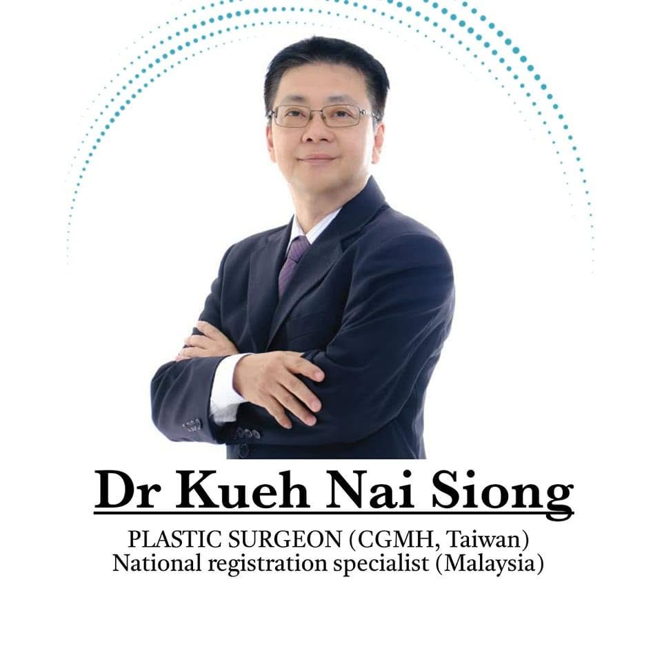

Anatomy before technique
Every face and body is different. A method that suits one patient may be wrong for the next. Assessment comes first; the technique is chosen to fit the person, not the other way around.
Home/Dr Kueh Nai Siong
Your surgeonConsultant Plastic & Reconstructive Surgeon — Kuching, Sarawak

Dr Kueh Nai Siong is a consultant plastic and reconstructive surgeon practising in Kuching, Sarawak. He completed his specialist training in plastic surgery at Chang Gung Memorial Hospital (CGMH), Taiwan, an institution internationally recognised for reconstructive microsurgery, craniofacial surgery and cleft care, and is registered on Malaysia's National Specialist Register (NSR).
He founded I Plastic Surgery & Reconstructive Surgery Clinic (时尚整形及重建外科诊所) so that patients in Sarawak could access the full range of plastic surgery locally — from cleft lip and palate repair and burn reconstruction, through to eyelid surgery, rhinoplasty, body contouring and non-surgical aesthetic treatment.
Dr Kueh sees patients personally at every stage: the first consultation, the operation, and every follow-up visit afterwards. Consultations are conducted in English, Mandarin, Hakka or Bahasa Malaysia.
Every face and body is different. A method that suits one patient may be wrong for the next. Assessment comes first; the technique is chosen to fit the person, not the other way around.
You will be told plainly what a procedure can achieve, what it cannot, and what the recovery genuinely involves. If surgery is not the right answer for you, Dr Kueh will say so.
Procedures requiring general anaesthesia or an inpatient stay are performed in accredited private hospitals with full anaesthetic and nursing support — never in a setting that is not equipped for them.
The operation is one day; healing takes months. Follow-up visits, scar management and direct access to the clinic are part of the treatment, not an optional extra.
Dr Kueh holds visiting consultant privileges at the following centres. The right venue for your procedure is decided at consultation, based on the surgery and your medical history.
Bring your questions. A consultation is a conversation, not a commitment to surgery.